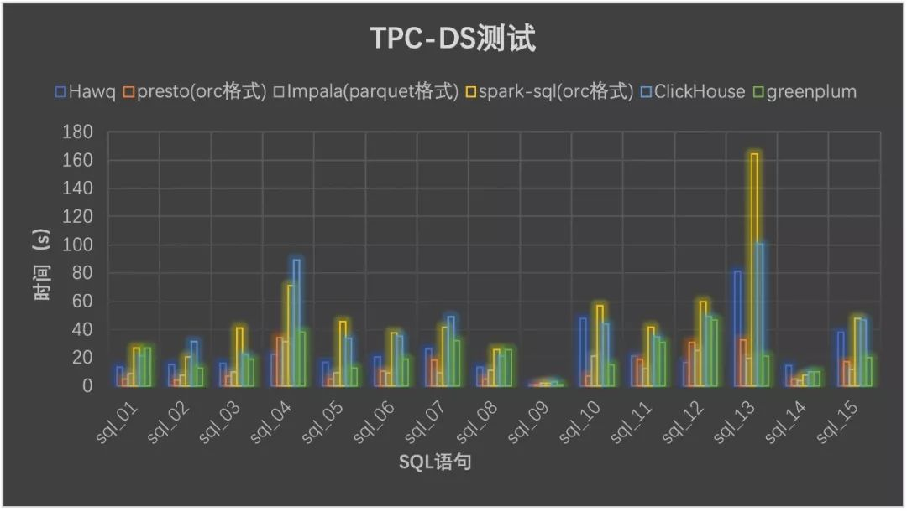

现在大数据组件非常多，众说不一，那么每个企业在不同的使用场景里究竟应该使用哪个引擎呢？易观Spark实战营团队选取了Hive、SparkSQL、Presto、Impala、HAWQ、ClickHouse、Greenplum七个大数据查询引擎，在原生推荐配置情况下，在不同场景下做一次横向对比，出品了一份开源OLAP引擎测评报告。
测试方案测试整体方案
本次测试针对现有Olap的7大Sql引擎Hadoop(2.7)、Hive(2.1)、HAWQ(3.1.2.0)、Presto(0.211)、Impala(2.6.0)、SparkSQL(2.2.0)、ClickHouse(18.1.0-1.El7)、Greenplum(5.7.0) 基础性能测试。我们采用多表关联和单大表性能分别对比不同组件在查询性能、系统负载等方面的情况，测试方案如下：
多表关联采用TPC-DS基准测试工具生成相应测试语句和数据进行测试。
单大表测试同样选用Tpc-Ds基准测试工具生成的最大数据量的表，并采用我们选用的一些常规性聚合语句进行测试。
TPC-DS测试与单表测试方案及数据准备
TPC-DS采用星型、雪花型等多维数据模式。它包含7张事实表，17张维度表平均每张表含有18列。其工作负载包含99个SQL查询，覆盖SQL99和2003的核心部分以及OLAP。这个测试集包含对大数据集的统计、报表生成、联机查询、数据挖掘等复杂应用，测试用的数据和值是有倾斜的，与真实数据一致。可以说TPC-DS是与真实场景非常接近的一个测试集，也是难度较大的一个测试集。
TPC-DS的这个特点跟大数据的分析挖掘应用非常类似。Hadoop等大数据分析技术也是对海量数据进行大规模的数据分析和深度挖掘，也包含交互式联机查询和统计报表类应用，同时大数据的数据质量也较低，数据分布是真实而不均匀的。因此TPC-DS成为客观衡量多个不同Hadoop版本以及SQL on Hadoop技术的最佳测试集。
本次测试采用TPC-DS提供的dsdgen命令工具生成指定量级的测试数据，我们指定数据量级为100G。
生成的各个表的数据量如下：
通过使用dsqgen命令根据TPC-DS提供的模板生成不同类型的SQL语句，TPC-DS默认支持以下模板：DB2.tpl、Netezza.tpl、Oracle.tpl、SQLServer.tpl。我们通过命令生成SQLServer.tpl模板的SQL语句，分别对其进行细微的修改使其符合不同的OLAP引擎支持的语法规则。
对于多表关联测试，我们从中选取了15条有代表性的SQL语句，几乎所有的测试案例都有很高的IO负载和CPU计算需求，涵盖了几乎所有的业务场景。
对于单大表测试，我们选择TPC-DS生成的测试数据集中数据量最大的表Store_Sales，并选用了9条使用频率高的常规性聚合sql语句进行测试。
环境准备
本次测试方案的硬件环境使用三台物理机，操作系统为CentOS7，基础配置信息如下表：
本次测试各组件搭建的版本信息如下：Hadoop(2.7)、Hive(2.1)、HAWQ(3.1.2.0)、Presto(0.211)、Impala(2.6.0)、SparkSQL(2.2.0)、ClickHouse(18.1.0-1.el7)、Greenplum(5.7.0)，所有组件都采用分布式搭建于三台服务器，并配置每台服务器上查询最大使用内存20G，CPU8线。
各个OLAP引擎通过各自的方式创建表结构，导入数据。Hive使用ORC格式的内部表；Impala使用Hive上的Parquet格式数据；Presto使用Hive上的ORC格式数据；HAWQ建立内部表使用默认Txt格式；ClickHouse使用Log表引擎分布式建表。
测试组件介绍
SparkSQL
SparkSQL是Spark处理结构化数据的程序模块。它将SQL查询与Spark程序无缝集成，可以将结构化数据作为 Spark 的 RDD 进行查询。RDD 的全称为 Resilient Distributed Datasets，即弹性分布式数据集，是 Spark 基本的数据结构。Spark 使用 RDD 作为分布式程序的工作集合，提供一种分布式共享内存的受限形式。RDD 是只读的，对其只能进行创建、转化和求值等操作。SparkSQL作为Spark生态的一员继续发展，而不再受限于Hive，只是兼容Hive。我们利用hive作为数据源，Spark作为计算引擎，通过SQL解析引擎，实现基于Hive数据源，Spark作为计算引擎的SQL测试方案。
Presto
Presto是一个分布式SQL查询引擎，它被设计为用来专门进行高速、实时的数据分析。它支持标准的ANSI SQL，包括复杂查询、聚合（Aggregation）、连接（Join）和窗口函数（Window Functions)。作为Hive和Pig（Hive和Pig都是通过MapReduce的管道流来完成HDFS数据的查询）的替代者，Presto本身并不存储数据，但是可以接入多种数据源，并且支持跨数据源的级联查询。Presto是一个OLAP的工具，擅长对海量数据进行复杂的分析；但是对于OLTP场景，并不是Presto所擅长，所以不要把Presto当做数据库来使用。
Impala
Impala 是 Cloudera 在受到 Google 的 Dremel 启发下开发的实时交互SQL大数据查询工具，它拥有和Hadoop一样的可扩展性、它提供了类SQL（类Hsql）语法，在多用户场景下也能拥有较高的响应速度和吞吐量。它是由Java和C++实现的，Java提供的查询交互的接口和实现，C++实现了查询引擎部分，除此之外，Impala还能够共享Hive Metastore，甚至可以直接使用Hive的JDBC jar和beeline等直接对Impala进行查询、支持丰富的数据存储格式（Parquet、Avro等）。
此外，Impala 没有再使用缓慢的 Hive+MapReduce 批处理，而是通过使用与商用并行关系数据库中类似的分布式查询引擎（由 Query Planner、Query Coordinator 和 Query Exec Engine 三部分组成），可以直接从 HDFS 或 HBase 中用 SELECT、JOIN 和统计函数查询数据，从而大大降低了延迟。
HAWQ
HAWQ 是一个 Hadoop 上的 SQL 引擎，是以 Greenplum Database 为代码基础逐渐发展起来的。HAWQ 采用 MPP 架构，改进了针对 Hadoop 的基于成本的查询优化器。除了能高效处理本身的内部数据，还可通过 PXF 访问 HDFS、Hive、HBase、JSON 等外部数据源。HAWQ全面兼容 SQL 标准，能编写 SQL UDF，还可用 SQL 完成简单的数据挖掘和机器学习。无论是功能特性，还是性能表现，HAWQ 都比较适用于构建 Hadoop 分析型数据仓库应用。
ClickHouse
ClickHouse由俄罗斯Yandex公司开发。专为在线数据分析而设计。Yandex是俄罗斯搜索引擎公司。官方提供的文档表名，ClickHouse日处理记录数”十亿级”。
特性：
- 采用列式存储
- 数据压缩
- 基于磁盘的存储，大部分列式存储数据库为了追求速度，会将数据直接写入内存，按时内存的空间往往很小
- CPU 利用率高，在计算时会使用机器上的所有 CPU 资源
- 支持分片，并且同一个计算任务会在不同分片上并行执行，计算完成后会将结果汇总
- 支持SQL，SQL 几乎成了大数据的标准工具，使用门槛较低
- 支持联表查询
- 支持实时更新
- 自动多副本同步
- 支持索引
- 分布式存储查询
Hive
Hive是基于Hadoop的一个数据仓库工具，可以将结构化的数据文件映射为一张数据库表，并提供完整的sql查询功能，可以将SQL语句转换为MapReduce任务进行运行。其优点是学习成本低，可以通过类SQL语句快速实现简单的MapReduce统计，不必开发专门的MapReduce应用，十分适合数据仓库的统计分析。
Hive是建立在 Hadoop 上的数据仓库基础构架。它提供了一系列的工具，可以用来进行数据提取转化加载（ETL），这是一种可以存储、查询和分析存储在 Hadoop 中的大规模数据的机制。
Hive 定义了简单的类 SQL 查询语言，称为 HQL，它允许熟悉 SQL 的用户查询数据。同时，这个语言也允许熟悉 MapReduce 开发者的开发自定义的 Mapper 和 Reducer 来处理内建的 Mapper 和 Reducer 无法完成的复杂的分析工作。
Greenplum
Greenplum是一个开源的大规模并行数据分析引擎。借助MPP架构，在大型数据集上执行复杂SQL分析的速度比很多解决方案都要快。
- GPDB完全支持ANSI SQL 2008标准和SQL OLAP 2003 扩展。
- 从应用编程接口上讲，它支持ODBC和JDBC。
- 完善的标准支持使得系统开发、维护和管理都大为方便。
- 支持分布式事务，支持ACID。
- 保证数据的强一致性。
- 做为分布式数据库，拥有良好的线性扩展能力。
- GPDB有完善的生态系统，可以与很多企业级产品集成，譬如SAS、Cognos、Informatic、Tableau等。
- 也可以很多种开源软件集成，譬如Pentaho、Talend 等。
性能测试分析
数据压缩
数据压缩方面，SparkSQL、Impala、Presto均采用的是Hive元数据，Hive数据100G上传之后显示为96.3G(.dat数据格式)，压缩比0.963；HAWQ压缩后数据大小为68.2G(.dat格式)，压缩比：0.682；ClickHouse采用自己默认格式42G；Greenplum未使用压缩，数据存储大小为98G。
性能测试
本节通过查询语句对比SparkSQL、Presto、Impala、HAWQ、ClickHouse、Hive、Greenplum七种组件的查询性能，测试结果均采用连续三次查询结果的平均值，通过图表展示对比结果。
性能分析部分我们分为两部分，第一部分是多表关联查询对比测试，第二部分是单大表查询对比测试。
多表关联查询对比测试
以下是多表关联测试结果，数据如下：
通过我们选取的15条SQL语句查询测试，从表中可以看出，Presto、Impala和HAWQ查询时间快于SparkSQL和ClickHouse，性能约是SparkSQL的2-3倍，其中尤其以Presto和Impala性能要好一些。
Greenplum在多表查询上也有不错的表现；ClickHouse对于多表Join效果相比较于Presto、Impala、HAWQ不是很好，并且很多复杂语法支持的不够好，可见并不是为关联分析而设置；而Hive无疑是所有组件中耗时最多的，其中部分语句查询时间超出1h的总时间按1h计算。
下面是通过图形展示来更加直观比较各组件性能。由于Hive与其他相差太大，在图中不作比较。

单表查询对比测试
以下是9条单表测试语句对六种组件进行测试，测试结果图表分析如下：
从结果中我们发现，对于单表测试ClickHouse要比其余几种组件查询速度表现突出，测试性能约是其余四种的3-6倍。而Presto相比于HAWQ、Impala、SparkSQL、GreenPlum在单表操作方面性能也稍好些。
下面通过图来直观比较：
从图像上更加清楚地显示出五种组件在单表测试方面性能的差距，ClickHouse在性能方面体现出了足够的优势，在单大表查询方面比其余组件性能都要好；Impala和Presto相比较，在sql_01-sql_05这5条语句是简单的一些求和求平均的单表操作方面，Presto的性能要比Impala好很多，而sql_06-sql_09一些复杂点的多个列的单表操作，Impala的性能要比Presto好一些，这也反映出Presto更加适合一些简单的数据量大的聚合操作，而Impala适合一些复杂的聚合操作。
最后我们发现HAWQ、Greenplum在单表聚合操作方面性能不如其余四种组件，测试时间要大大超过它们，当然也不排除测试环境的影响，但是测试结果表明，HAWQ、Greenplum不适合单表的复杂聚合操作，更适合多表的聚合操作。
性能测试结果分析
从上面的分析结果可以看出，Presto、Impala以及HAWQ在多表查询方面体现出了优势，虽说Presto和Impala在多表查询方面的性能差别不大，但是在查询过程中却发现Impala的一些局限性，并尽量避开这些局限问题进行测试。Impala不支持的地方，例如：不支持update、delete操作，不支持Date数据类型，不支持ORC文件格式等等，而Presto则基本没有这些局限问题（本次测试中基本没有发现）。
在单表测试方面ClickHouse体现出了比其余组件的优势，性能比其他组件要好一大截，而Presto相比于HAWQ和impala以及SparkSQL在单大表聚合操作方面的表现也相对优秀。
各组件综合分析比较
通过以上图表查询性能分析以及我们查找相关资料对各组件总结如下：
- SparkSQL是Hadoop中另一个著名的SQL引擎，它以Spark作为底层计算框架，Spark使用RDD作为分布式程序的工作集合，它提供一种分布式共享内存的受限形式。 在分布式共享内存系统中，应用可以向全局地址空间的任意位置进行读写操作，而RDD是只读的，对其只能进行创建、转化和求值等操作。这种内存操作大大提高了计算速度。 SparkSQL的性能相对其他的组件要差一些，多表单表查询性能都不突出。
- Impala官方宣传其计算速度是一大优点，在实际测试中我们也发现它的多表查询性能和presto差不多，但是单表查询方面却不如presto好。 而且Impala有很多不支持的地方，例如：不支持update、delete操作，不支持Date数据类型，不支持ORC文件格式等等，所以我们查询时采用Parquet格式进行查询，而且Impala在查询时占用的内存很大。
- Presto综合性能比起来要比其余组件好一些，无论是查询性能还是支持的数据源和数据格式方面都要突出一些，在单表查询时性能靠前，多表查询方面性能也很突出。 由于Presto是完全基于内存的并行计算，所以Presto在查询时占用的内存也不少，但是发现要比Impala少一些，比如多表Join需要很大的内存，Impala占用的内存比Presto要多。
- HAWQ 吸收了先进的基于成本的 SQL 查询优化器，自动生成执行计划，可优化使用Hadoop 集群资源。 HAWQ 采用 Dynamic Pipelining 技术解决这一关键问题。Dynamic Pipelining 是一种并行数据流框架，利用线性可扩展加速Hadoop查询，数据直接存储在HDFS上，并且其SQL查询优化器已经为基于HDFS的文件系统性能特征进行过细致的优化。 但是我们发现HAWQ在多表查询时比Presto、Impala差一些；而且不适合单表的复杂聚合操作，单表测试性能方面要比其余四种组件差很多，HAWQ环境搭建也遇到了诸多问题。
- ClickHouse 作为目前所有开源MPP计算框架中计算速度最快的，它在做多列的表，同时行数很多的表的查询时，性能是很让人兴奋的，但是在做多表的Join时，它的性能是不如单宽表查询的。 性能测试结果表明ClickHouse在单表查询方面表现出很大的性能优势，但是在多表查询中性能却比较差，不如Presto和Impala、HAWQ的效果好。
- Greenplum作为关系型数据库产品，它的特点主要就是查询速度快，数据装载速度快，批量DML处理快。 而且性能可以随着硬件的添加，呈线性增加，拥有非常良好的可扩展性。因此，它主要适用于面向分析的应用。 比如构建企业级ODS/EDW，或者数据集市等，Greenplum都是不错的选择。
- 此外我们还对Flink进行了调研发现，Flink 核心是个流式的计算引擎，通过流来模拟批处理，Flink SQL还处于早期开发阶段，未来社区计划通过提供基于REST的SQL客户端，目前SQL客户端不能直接访问Hive，通过YAML file文件定义外部数据源，可以连接文件系统和Kafka，目前短时间我们的SQL测试不太好模拟。所以没有对Flink进行测试分析。
我们通过测试以及以上的相关调研编写了各组件各个方面的综合对比分析表，这里采用5分为满分来比较，如下表：